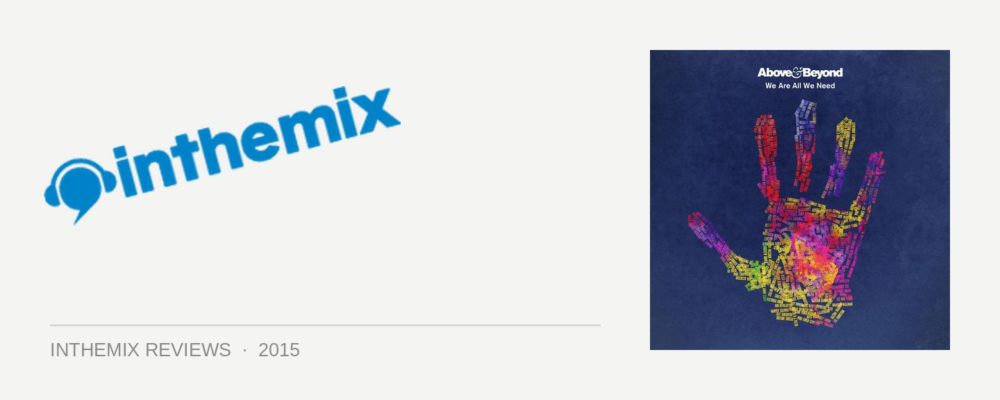

Above & Beyond - We Are All We Need
It’s best to view Above & Beyond in their current iteration as a full-blown songwriting team, and on account of their ‘Acoustic’ release from last year, even as a “band”.
The current set-up sees the UK DJ/producer trio of Jono Grant, Tony McGuinness and Paavo Siljamäki working closely with vocalist songwriters like Zoë Johnston and Alex Vargas (and a dash of studio help from Andrew Beyer). While their roots might be in club trance, the choruses featured in records like Blue Sky Action and All Over The World are more tightly honed and catchier than ever. And We Are All We Need is absolutely brimming with them.
This ain’t something that will please those enthused with the deeper, more progressive sounds heard on their Tri-State debut. While occasionally we hear an instrumental stormer from A&B like Hello, there’s admittedly not a lot on this album to please the trance purists. However, vocal anthems have always been a key to the appeal of A&B. We Are All We Need sees them taking the format established on 2012’s Group Therapy, and polishing it to the nth degree.
Starting with the album’s opener Quieter is Louder, it’s one of those lush, ambient instrumentals that you just know they’ll be opening their shows with; naturally, cut to slow-motion footage of crowds shouting, jumping, crying… and other gratuitous displays of irrepressible emotion.
The title track We’re All We Need with Zoë Johnston sets the emotional tone for the album; it works beautifully as a mellow, downtempo piece, before giving way to the signature A&B sound when those big trance synths kick in.
New single All Over The World with Alex Vargas is possibly the album’s most heroic vocal cut, and it’ll already be well familiar to fans. It’s also a great example of how the trio have evolved their sound, holding onto the core A&B experience from classics like Alone Tonight, though distilled it into an insanely polished trance/EDM/electro hybrid that’s allowed them to remain on the mainstages of festivals like Ultra Miami and Tomorrowland.
It’s also reflects how much of a club focus ended up finding its way onto We Are All We Need. While both their Group Therapy and Oceanlab albums established the template of a largely downtempo focus that would later be reworked into club mixes, things turned out slightly different here. While there’s a definite, carefully considered flow of an album, these tracks are from the outset are barely an edit away from being ready for the clubs.
In fact, nearly every last track on We Are All We Need will be making its way into their live sets, and it’s all the better for it. Zoë Johnston’s next collab Peace of Mind opens on one of those typical big EDM grooves, custom-built for the mainstages in a fashion that’s almost a little cynical; before it bottoms out into a melodic breakdown that’s good enough to seduce even the stodgiest of old A&B fans. Turns out their trance roots aren’t completely discarded after all.
There are a few other examples where the deeper, more progressive stylings of the classic Anjunabeats sound makes an appearance. The album mix of Hello sees them scaling back the original’s manic energy into a melodic trancer with much more of an ethereal charm. And hidden amongst what seems like an endless string of overenthusiastic vocal anthems, they still manage to knock out an instrumental as breathlessly gorgeous as Out of Time.
Elsewhere though, Little Something sees them in unrestrained, adult contemporary power ballad mode, and it’s a little too much. Too much melodrama and not enough melancholy, and these moments are stacked one on top of the other as the album moves towards its conclusion. It certainly won’t be converting any militant techno fans to the Anjunabeats camp.
However, if you were one of those fans tweeting during their Group Therapy 100 performance at Madison Square Garden that the overwhelming emotion of the experience was bringing you to tears… Then you have a gold stamp guarantee that you’ll find plenty to cry about here.
inthemix was in Goa over New Year’s to catch Above & Beyond perform at the VH1 Supersonic festival, where they basically performed a back-to-back medley of tunes from this album and it’s easy to see how much these tunes really do resonate with crowds. While the purer trance of the early Anjunabeats era might be long gone, it’s easy to appreciate how much they’ve polished their songwriting chops on We Are All We Need.
While there’s less of the consistent thematic thread that drew Group Therapy together, music wise, Above & Beyond have delivered their most polished album yet; functioning both as A-grade pop music, and mass-appeal club music with soul. If you know what you’re getting, We Are All We Need is beautiful stuff.